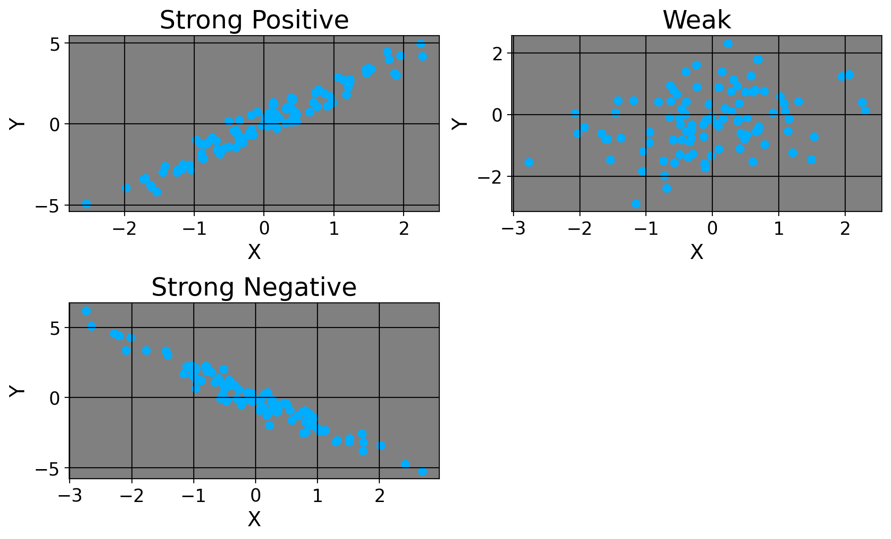

5 Correlation and Association
As Gregory House once said, “The cave man who heard a rustle in the bushes checked out to see what it was lived longer than the guy who assumed it was just a breeze”. House’s point here is that the human ability for hypothetical reasoning and the ability to form associations in our minds was critical to our survival and development. We will discuss the aspect of statistical reasoning that covers hypothetical reasoning much later, but for now we cover simple correlation and measures of association.
In statistics, we typically begin by looking at bivariate correlations. The formula for Pearson’s \(r\), the Pearson correlation coefficient cor continuous variables, is: \[ r = \frac{\sum_{i=1}^{N} (x_i - \bar{x})(y_i - \bar{y})}{\sqrt{\sum_{i=1}^{N} (x_i - \bar{x})^2} \sqrt{\sum_{i=1}^{N} (y_i - \bar{y})^2}}. \] Let’s parse these terms, shall we? The numerator is the formula for what we call the covariance between two random variables. It is the sum of the differences between the individual datapoints for each variable and its average, divided by the product of the standard deviations of each variable. Let’s compute the Pearson correlation coefficient ( r ) for the following data points:
\[ X = \{1, 2, 3, 4\} \] \[ Y = \{2, 4, 5, 7\} \]
Calculate the means of \(x\) and \(y\): \[ \bar{X} = \frac{1 + 2 + 3 + 4}{4} = 2.5 \] \[ \bar{Y} = \frac{2 + 4 + 5 + 7}{4} = 4.5 \]
Compute the differences from the mean for each data point: \[ y_i - \bar{x} = \{-1.5, -0.5, 0.5, 1.5\} \] \[ y_i - \bar{y} = \{-2.5, -0.5, 0.5, 2.5\} \]
Calculate the sum of the products of these differences: \[ \begin{aligned} &\sum (x_i - \bar{x})(y_i - \bar{y}) = \\ &(-1.5 \cdot -2.5) + (-0.5 \cdot -0.5) + (0.5 \cdot 0.5) + (1.5 \cdot 2.5) = \\ &3.75 + 0.25 + 0.25 + 3.75 = 8 \end{aligned} \]
Compute the sum of the squared differences for \(x\) and \(y\). For x we have \[ \begin{aligned} &\sum (x_i - \bar{x})^2 = \\ &(-1.5)^2 + (-0.5)^2 + (0.5)^2 + (1.5)^2 = \\ & 2.25 + 0.25 + 0.25 + 2.25 = 5. \end{aligned} \] For \(y\) we have \[ \begin{aligned} &\sum (y_i - \bar{y})^2 = \\ &(-2.5)^2 + (-0.5)^2 + 0.5^2 + 2.5^2 = \\ &6.25 + 0.25 + 0.25 + 6.25 = 13. \end{aligned} \]
Now, we plug these in: \[ r = \frac{\sum (x_i - \bar{x})(y_i - \bar{y})}{\sqrt{\sum (x_i - \bar{x})^2} \sqrt{\sum (y_i - \bar{Y})^2}} = \frac{8}{\sqrt{5} \cdot \sqrt{13}} = \frac{8}{\sqrt{65}} = \frac{8}{8.062} \approx \boxed{0.993}. \] Okay, so here’s our correlation coefficient. We’d say there’s a strong, positive relationship between our variables here. Similarly, if \(r\) were negative, we’d say there’s a strong negative relation. Of course, if the coefficient were, say, 0.01 or -0.01, we’d say there’s pretty much no relatoinship between the variables. Here’s how we’d visualize these.